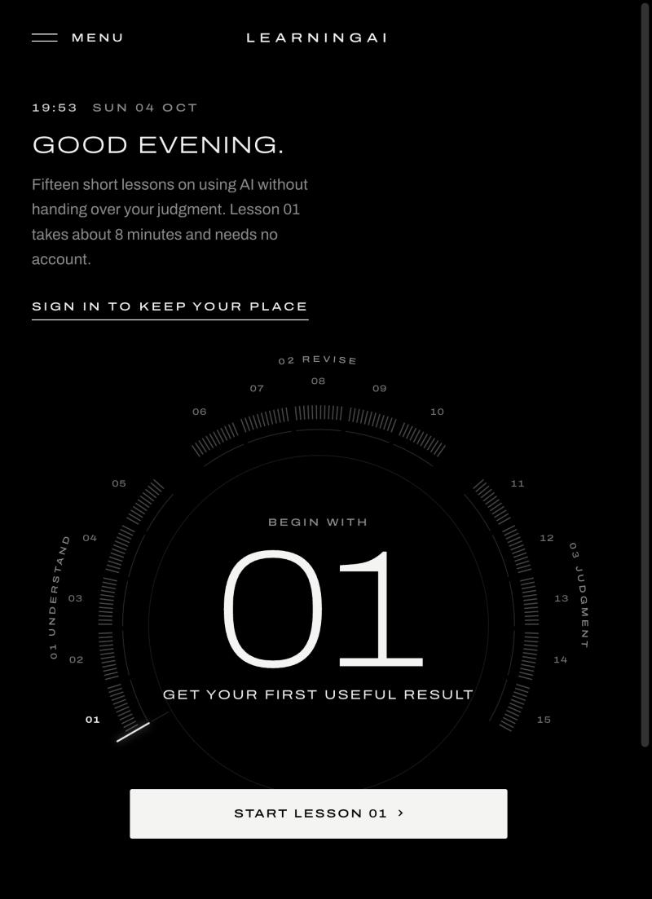
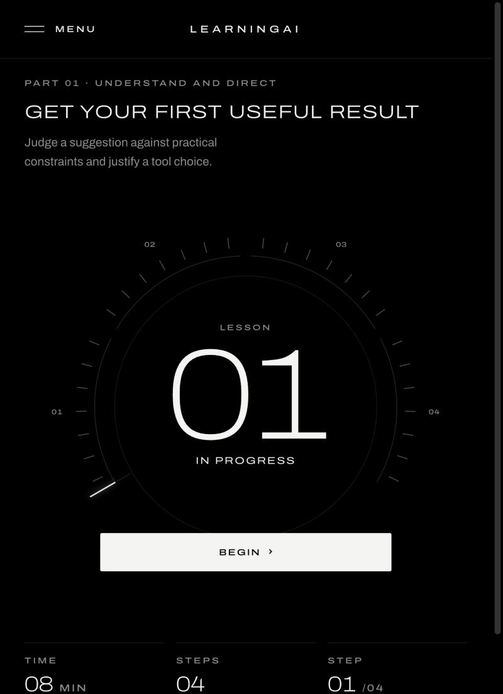
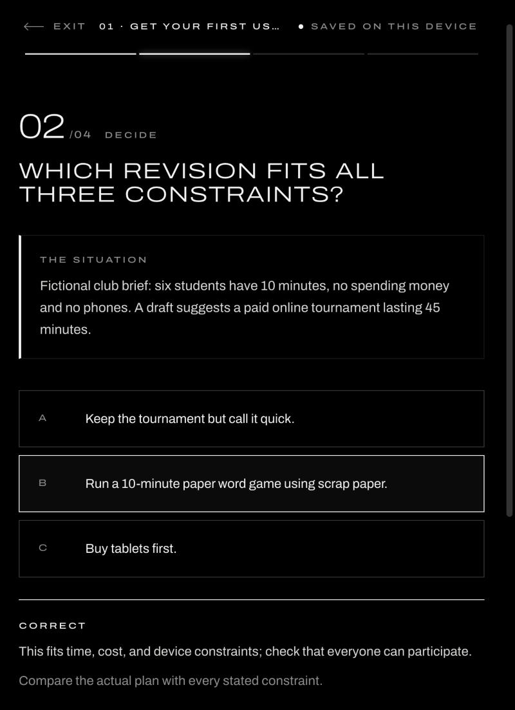
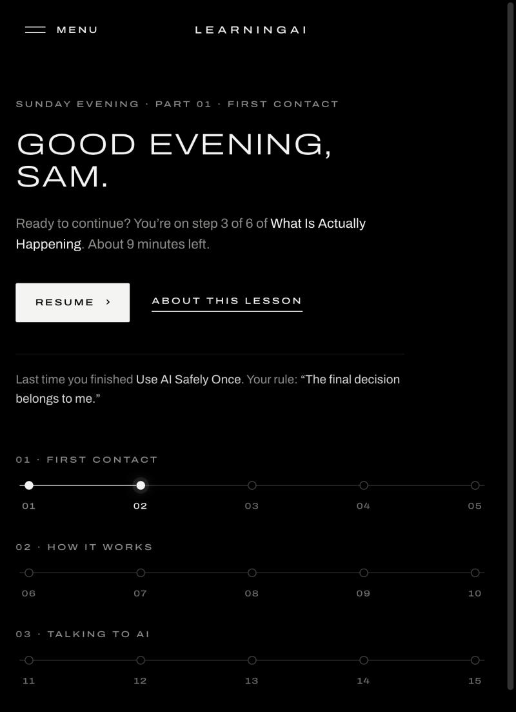
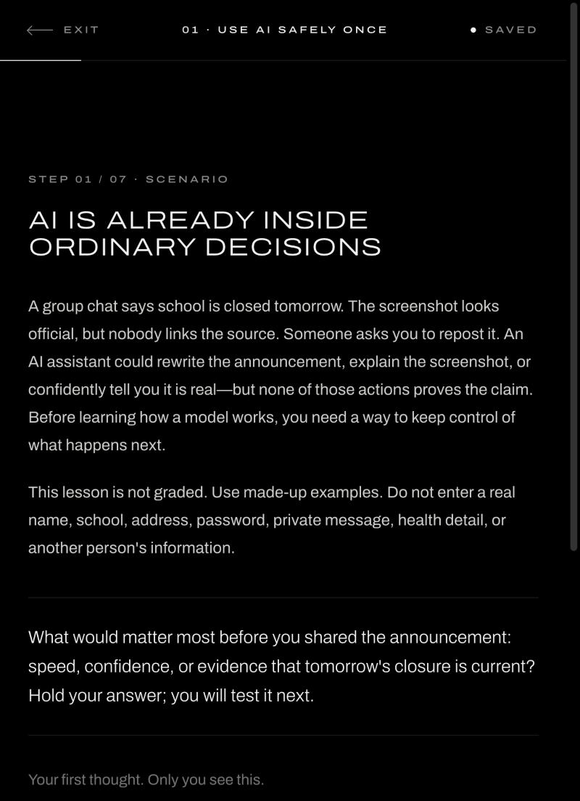
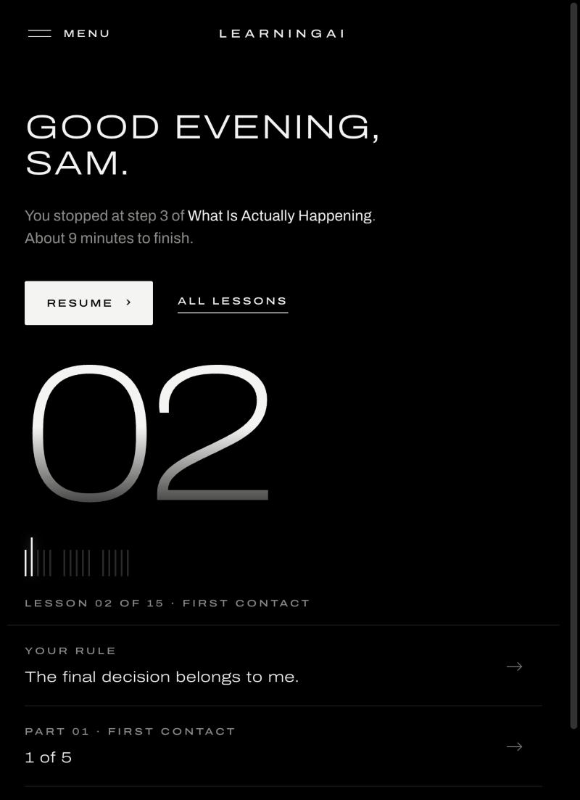
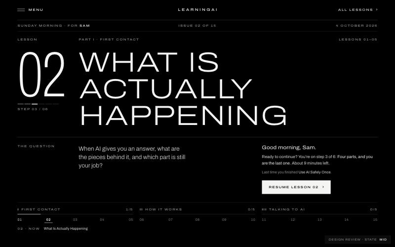
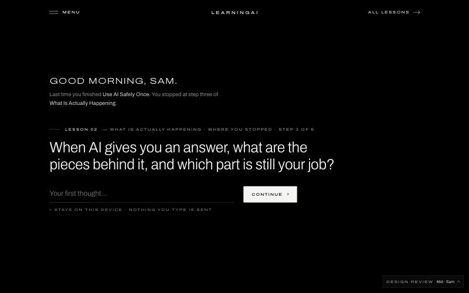

LearningAI · every version, newest first
Every LearningAI design from these sessions, with screenshots, and each one opens live. Pick the parts you like (a Home, a lesson style, a menu), and they can be combined into the current site.
The instrument dial on every page, the new menu where each word slides out on its own over the blurred page, and the "AI You Can Use" curriculum from the review package.



Before the cockpit: a large personal greeting, your next step, your rule from lesson 01, and a track of 15 dots in three rows. Previous course content.


The first black-and-white version: greeting, a huge silver lesson number, a small tick track, and rows for your rule and your part. Previous course content.

Three Home ideas built side by side. You picked Cockpit. Cover is a magazine-cover Home. Invitation asks the lesson's question on Home with a box for your first thought.


Separate pages from earlier in these sessions. They open in a new tab.
The two Oct 4 versions use the previous course content and their own fake test accounts. Progress there stays in the browser and doesn't affect the current site.